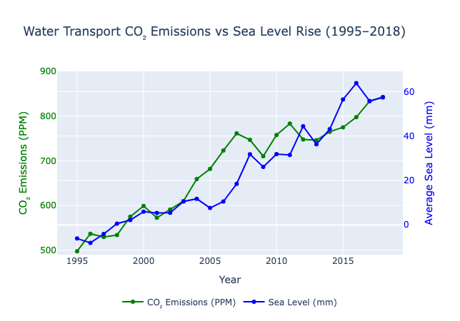
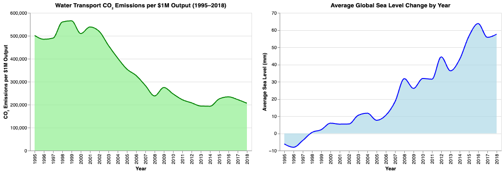

Proposition: Increase in use of water transport in global trade increases net carbon emissions, resulting in higher sea levels.
FOR the Proposition

Design Decisions and Rationale:
- Use of a dual-axis plot (CO₂ emissions and sea level rise) visually suggests a causal relationship between the two variables making viewers compare the 2 values thinking they both have equal impact. (Score: -1)
- Matching the upward slopes by adjusting y-axis scales emphasizes synchronized growth in emissions and sea levels. (Score: -0.5)
- Color-coding CO₂ emissions in green and sea level rise in blue leverages environmental associations to reinforce context. (Score: +1)
AGAINST the Proposition

Design Decisions and Rationale:
- Separated emissions and sea levels into two side-by-side charts to avoid implying direct causality but still making readers try to make a comparison between the 2 plots. (Score: -0.5)
- Shaded the area below each line to emphasize the contrast between declining emissions per $1M and rising sea levels. (Score: -0.5)
- Used light green and light blue colors to maintain clear, neutral environmental associations. (Score: +1)
Final Reflection
This project challenged me to think beyond simply "visualizing the data" and focus more on trying to convey a message using graphs. I found it surprisingly difficult to walk the line between being persuasive and being deceptive, especially when minor choices like color or trend emphasis had such large impact. Also choosing the right data which helped me convey messages for both sides was very difficult to find.
One of the most interesting realizations for me was how easily trust in a visualization can be manipulated without altering the data itself. For example, using a dual-axis plot in the “FOR” visualizations made it very easy to imply relationship between emissions and sea level rise, even though I knew the data only showed correlation. Meanwhile, in the “AGAINST” visualizations, separating charts and using neutral colors framed the same data in a more skeptical, detached way. These small shifts completely changed the narrative. I learned that graphs can be used to tell a story in any way you want without actually changing anything making it extremely powerful.
To me, ethical visualization means being honest about uncertainty, assumptions, and limitations while still communicating a clear point. Acceptable persuasive choices help a viewer understand a position while still giving them room to think critically. This project didn’t just teach me to spot deceptive techniques, it also taught me that the most powerful visualizations are the ones that persuade because they are thoughtful, transparent, and fair.